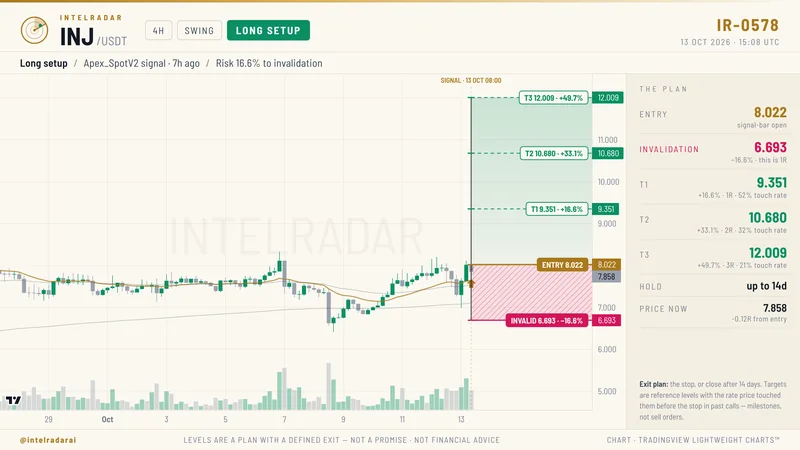

Swing
Setups on the 4-hour chart, held for up to 14 days.
- Entry at the signal bar
- Invalidation level, stated as 1R
- T1–T3 with how often price touched each in past calls
IntelRadar Research runs rules-based engines on Binance market data at every 4-hour close. Every call is published complete, with entry, invalidation and targets, and every outcome is measured from the price we posted.

Entry, invalidation and three targets, with how often price reached each level in past calls. Posted before the move.
Most crypto "signals" are marketing: urgency, screenshots of winners, and a coin someone already owns. We publish research the way a desk would: rules first, everything measured, the misses recorded too.
Each book has its own engines, timeframe and exit rules, and each one is tracked separately, so one book's results never hide another's.
Setups on the 4-hour chart, held for up to 14 days.
Slower setups on the daily chart, aimed at the larger moves.
Long and short calls from separate engines, each with its own rules.
A BTC Quant read after each 4-hour close, a daily Market Pulse, and instant alerts when bitcoin breaks its 24-hour range or moves 2–4% within an hour.
Every posted call is followed to the end: targets, stops, time exits and breakevens, counted in R from the posted price, never from a better price after the fact.
When a call reaches +30%, +50% or +100%, it gets a result card measured on hourly highs, only while its stop held, and printed next to the base rate for all calls.
No call is written by hand. A candle closes, the rules run, and whatever qualifies is published. If nothing qualifies, nothing is posted.
Every 4 hours. Engines read finished candles only, never a price still moving.
The same coded rules run across the whole coin list: Swing, then Futures, then Position.
Entry, invalidation, T1–T3, exit plan and chart, all before the move, so it can be checked later.
From the posted price, while the stop holds. Stops and time exits are recorded like everything else.
These are unedited posts from 13 October 2026, including the parts a signal group would crop out. Select any image to see it full size.
Cards are generated automatically by the engines. Prices and results are those of the day shown and will be different today.
An idea has to survive testing before it reaches a channel. These are the rules every one of them goes through.
The test is written down before it is run, so the result cannot be bent to fit the hope.
A rule has to hold on data it never saw, walked forward through time, not fitted to the past.
Fees and slippage are in every test. Many ideas that look good on a chart die right here.
Signals use closed candles only. Nothing may use a price that did not exist yet.
No claim before 30 trades. Our live forward test on an exchange demo account is judged only after 60.
From the research log: ideas we rejected
A "coiling" pattern raised the odds of a +70% week by 1.88× on data it had never seen. With a real stop, it still lost money. Better odds are not a strategy, so it never became a signal.
After a sharp breakout or breakdown, the next direction was a coin flip. Only the size of the next 24 hours held up, so our BTC alerts say a big move is under way, never which way to bet.
Smart-money concepts, order blocks, Fibonacci, Elliott waves, Wyckoff, Ichimoku and more, tested on gold and other metals. None survived, so none is offered.
Every rule failed once realistic trading costs were included.
The free channel is a real sample of the desk's output, not a teaser. Pro will carry everything, including every stop.
On Telegram, no sign-up, no payment.
The free channel shows calls and the targets they reach. Each day's calls are the first two per book from 09:00 IST.
Opens when @intelradarai reaches 2,000 followers on X.
Pro is where the full record lives: every call's outcome, the stops as well as the targets.
No. IntelRadar Research publishes research: what rules-based engines found, with the levels they use. You decide what to do with it. Crypto is volatile and you can lose all of the money you put in. Never trade money you cannot afford to lose.
No, and anyone who does is not being straight with you. Many calls are stopped out. The trade-updates card above is a real one: 14 of the 24 calls it updated were stopped. We print base rates instead of promises.
Binance spot and USD-M futures market data. Signals are computed only from closed candles.
A few minutes after each 4-hour candle closes: about 01:30, 05:30, 09:30, 13:30, 17:30 and 21:30 IST. If nothing qualifies, nothing is posted. A quiet market means a quiet channel.
Free is a sample of the real output: the first two Swing, Position and Futures calls each day from 09:00 IST, plus every target-reached chart from the full book. Pro, when it opens, carries every call and every update.
From the price we posted, on hourly highs, and only while the call's stop had not been hit. Each card also prints how many calls in the last 30 days reached the same level, so you can see how common it is.
Yes. Every posted call is tracked to its outcome, and the trade-updates cards list the stops next to the targets. In the free channel you see calls and targets reached; the full record, stops included, is in Pro.
Calls come from the engines' scans of the whole market, not from anyone's bag, and we never take payment to feature a coin.
Free calls on Telegram, measured in the open. Follow on X for research notes and the Pro launch.